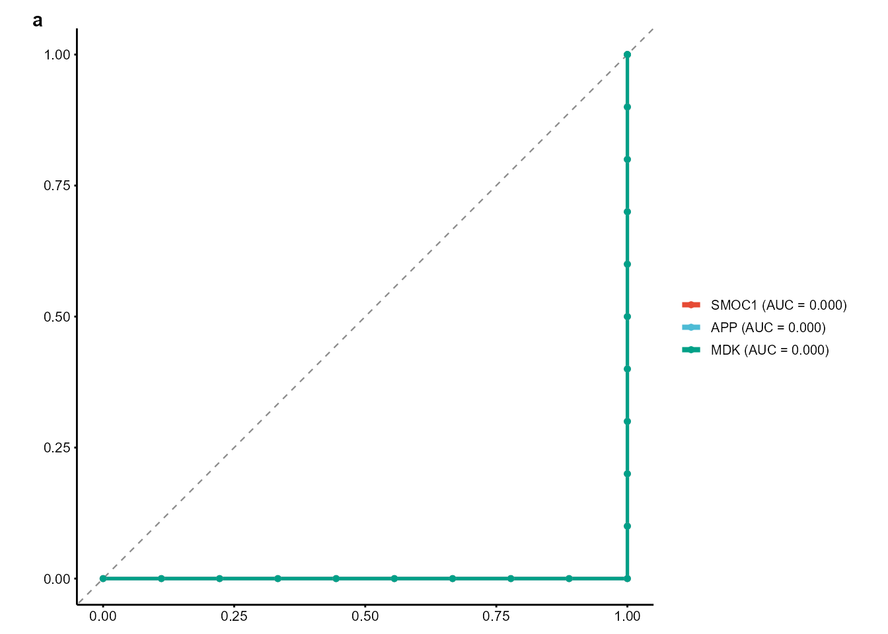
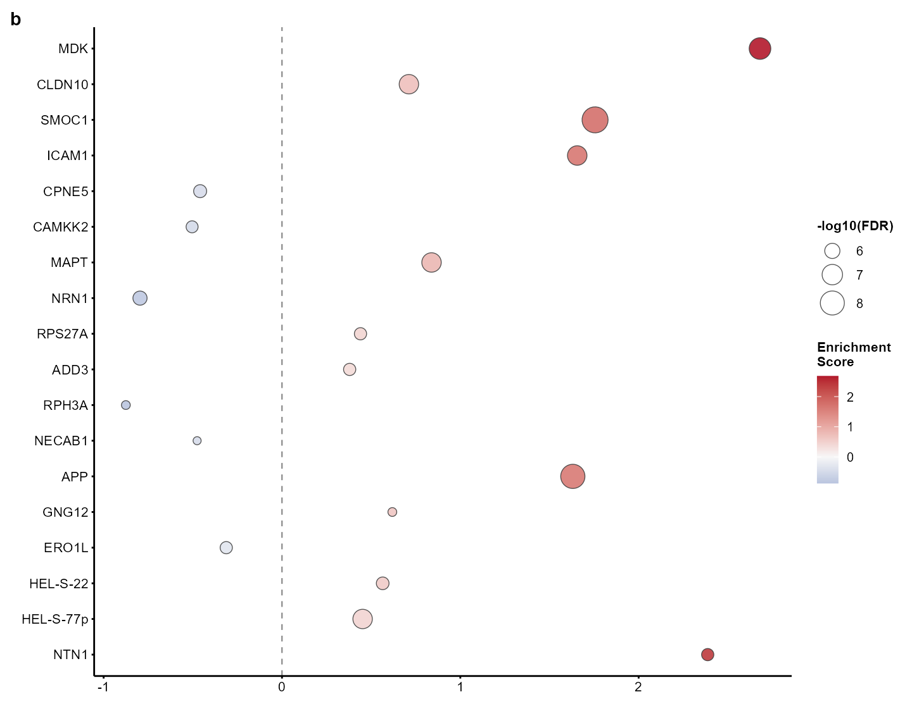
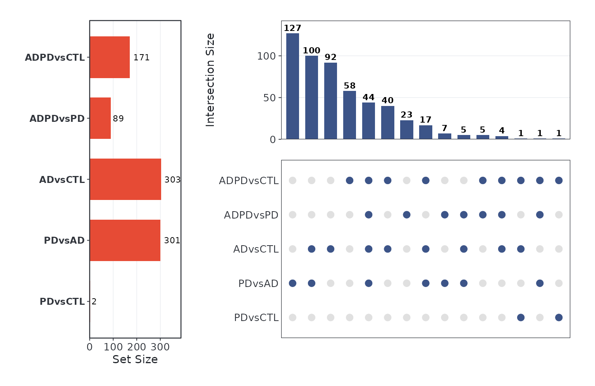
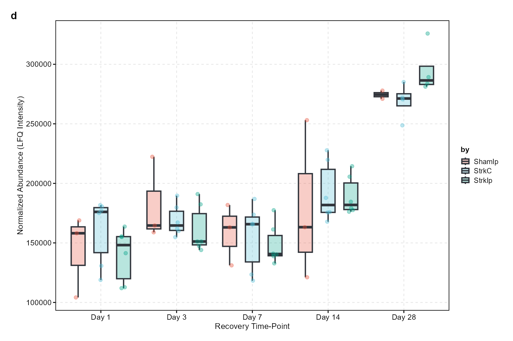
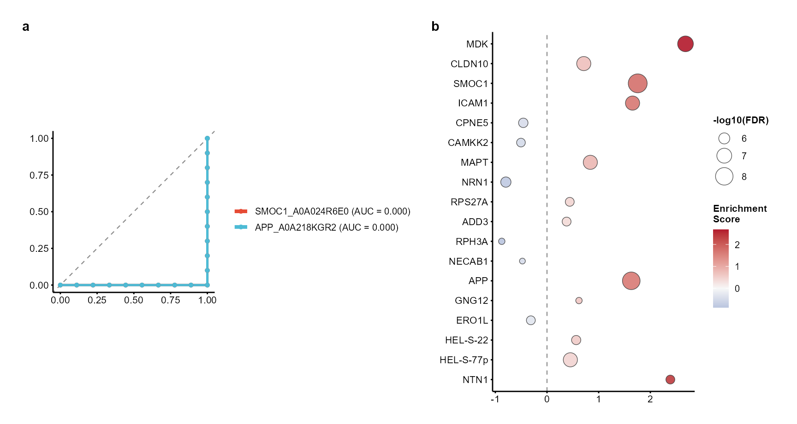

Nature/Cell/Science-Quality Figures with cliomicplot
Lucas VHH Tran
2026-11-20
Source:vignettes/journal-plots.Rmd
journal-plots.RmdOverview
Publishing in premier scientific journals—Nature, Cell, and Science (CNS)—demands strict visual, typographic, and statistical discipline:
- Exact physical trim sizing: Figures must be drawn at the publisher’s printed column widths (e.g., 89 mm single-column, 120 mm 1.5-column, 183 mm double-column) rather than an arbitrary 7×5 inch canvas scaled down during typesetting.
- Minimalist typography and data-to-ink ratio: All in-figure titles are removed (figure explanations belong in the legend/caption); panel identifier tags (a, b, c, d) sit at the upper left; font sizes are constrained to 5–7 pt at final print scale.
-
Open axes vs. full-box frames: Top and right spines
are removed for Nature and Science (
theme_cli_nature(),theme_cli_science()), while structured spines and outward ticks are preserved for Cell and SCI/Elsevier styles (theme_cli_cell(),theme_cli_scifig()). - Clinical and biological integrity: Clinical figures prioritize effect magnitudes over raw p-values (e.g. MCID thresholds), track exact denominators, report landmark milestones, and present multi-omics evidence side-by-side.
This vignette demonstrates how cliomicplot creates publication-ready figures matching these exact journal requirements, drawing on the real proteomics, metabolomics, and clinical datasets bundled with the package.
library(cliomicplot)
library(ggplot2)
library(patchwork)
clipar(stat.test = NULL) # Disable auto statistical overlays for clean journal look
# Helper to resolve bundled example datasets
resolve_data = function(filename) {
pkg_path = system.file("extdata", filename, package = "cliomicplot")
if (pkg_path != "" && file.exists(pkg_path)) return(pkg_path)
fallback = file.path("..", "inst", "extdata", filename)
if (file.exists(fallback)) return(fallback)
fallback2 = file.path("inst", "extdata", filename)
if (file.exists(fallback2)) return(fallback2)
stop("Cannot locate ", filename)
}
# 1. AD/PD cortex proteomics (MaxQuant)
e_adpd = new.env()
load(resolve_data("ADPD_cortex_Maxquant.RData"), envir = e_adpd)
adpd_meta = e_adpd$MetaData
adpd_wide = e_adpd$data_wide
adpd_res = e_adpd$results_long
# 2. Stroke brain time-course proteomics
e_stroke = new.env()
load(resolve_data("StrokeBrain_TimeCourse.RData"), envir = e_stroke)
stroke_long = e_stroke$data_long
stroke_meta = e_stroke$MetaData1. The Design Language of Nature, Cell, and Science
Premier journals follow distinct visual conventions:
| Specification | Nature / Nat. Comms | Science / AAAS | Cell Press | SCI / Elsevier |
|---|---|---|---|---|
| Theme | theme = "nature" |
theme = "science" |
theme = "cell" |
theme = "scifig" |
| Spines | Open (left & bottom only) | Ultra-clean open | Structured open | 4 visible black spines |
| Grid lines | Refused / None | Strictly None | None | Subtle dashed (0.3 pt) |
| Ticks | Outward (1.5 pt) | Outward (1.5 pt) | Outward (1.5 pt) | Outward (2.5 pt) |
| Single Column | 89 mm (3.50 in) | 90 mm (3.54 in) | 85 mm (3.35 in) | 85–90 mm |
| Double Column | 183 mm (7.20 in) | 183 mm (7.20 in) | 174–180 mm | 175–185 mm |
| Max Height | 170 mm (Nature) / 225 mm | 230 mm | 203 mm | 220 mm |
| Panel Tags | Bold lowercase (a, b) | Bold lowercase (a, b) | Bold uppercase (A, B) | Bold lowercase (a, b) |
| Format | Vector PDF/SVG required | Vector PDF/SVG required | Vector PDF/EPS/SVG | Vector PDF/TIFF/SVG |
2. Figure 1 — Diagnostic Biomarker ROC Curves (Nature Style)
ROC curves evaluate classifier sensitivity and specificity across all thresholds. In Nature style, coordinates are isometric (1:1 aspect ratio), the chance diagonal is dashed, and exact AUC values are embedded directly in the legend.
Here, we evaluate top differentially expressed cortex proteins for distinguishing Alzheimer’s disease (AD) from neurologically normal controls (CTL):
meta_adctl = adpd_meta[adpd_meta$group %in% c("AD", "CTL"), ]
samples = as.character(meta_adctl$sampleid)
top_markers = c("SMOC1_A0A024R6E0", "APP_A0A218KGR2", "MDK_E9PPJ5")
roc_df = data.frame(
disease = factor(meta_adctl$group, levels = c("CTL", "AD")),
t(adpd_wide[top_markers, samples]),
check.names = FALSE
)
cliplot(roc_df,
type = type_roc(predictors = top_markers, response = "disease"),
theme = "nature", palette = "npg") +
labs(tag = "a") +
theme(plot.tag = element_text(size = 11, face = "bold"))
3. Figure 2 — GSEA-Style Pathway Enrichment Dot Plot (Nature Style)
Enrichment dot plots order biological pathways or gene sets by Normalized Enrichment Score (NES), encoding statistical significance () in dot size and regulation direction in color:
# Extract top DE proteins from AD vs CTL comparison
r_adctl = adpd_res[adpd_res$test == "ADvsCTL", ]
r_adctl = r_adctl[order(r_adctl$Adj.P.Value), ]
top_pathways = data.frame(
Term = sub("_.*$", "", r_adctl$UniqueID[1:18]),
NES = r_adctl$logFC[1:18],
FDR = r_adctl$Adj.P.Value[1:18]
)
cliplot(top_pathways, type = "gsea", top_term = 18, theme = "nature") +
labs(tag = "b") +
theme(plot.tag = element_text(size = 11, face = "bold"))
4. Figure 3 — Multi-Set Intersection: UpSet Plot (Cell Style)
UpSet plots supersede Venn diagrams when tracking differentially expressed gene or metabolite overlap across biological contrasts:
deg_sets = lapply(unique(adpd_res$test), function(tt) {
sub = adpd_res[adpd_res$test == tt, ]
sub$UniqueID[sub$Adj.P.Value < 0.05 & abs(sub$logFC) > 0.5]
})
names(deg_sets) = unique(adpd_res$test)
deg_sets = deg_sets[vapply(deg_sets, length, integer(1)) > 0]
cliplot(deg_sets, type = "upset", theme = "cell") +
labs(tag = "c") +
theme(plot.tag = element_text(size = 11, face = "bold"))
5. Figure 4 — SCI / Elsevier Full-Box Style with
theme_cli_scifig()
For manuscripts submitted to Elsevier, IEEE, and SCI journals
requiring full four-sided spines and outward tick marks,
theme_cli_scifig() provides a crisp box frame with a subtle
dashed reference grid:
# Protein abundance across stroke recovery time-points
lxn_sub = stroke_long[stroke_long$UniqueID == "Lxn_P70202", ]
lxn_sub$timepoint = factor(paste0("Day ", lxn_sub$conc),
levels = c("Day 1", "Day 3", "Day 7", "Day 14", "Day 28"))
cliplot(expr ~ timepoint | treatment, data = lxn_sub,
type = "boxplot",
theme = "scifig",
palette = "npg",
xlab = "Recovery Time-Point",
ylab = "Normalized Abundance (LFQ Intensity)") +
labs(tag = "d") +
theme(plot.tag = element_text(size = 11, face = "bold"))
6. Multi-Panel Composite Assembly & Journal-Sized Export
A key requirement in CNS journals is assembling modular panels into a unified figure and exporting at exact physical millimeter trim width:
panel_a = cliplot(roc_df, type = type_roc(predictors = top_markers[1:2], response = "disease"),
theme = "nature", palette = "npg")
panel_b = cliplot(top_pathways, type = "gsea", top_term = 12, theme = "nature")
# Combine side-by-side using patchwork
composite_fig = (panel_a + panel_b) +
plot_layout(widths = c(1, 1.25)) +
plot_annotation(tag_levels = "a") &
theme(plot.tag = element_text(size = 11, face = "bold"))
composite_fig
Exact Journal Dimensions & Vector Export
cli_journal_size() provides the publisher’s exact column
specifications:
journals = c("nature", "natcomms", "science", "cell", "jama", "nejm", "lancet", "plos", "ieee")
size_table = do.call(rbind, lapply(journals, function(j) {
s_single = cli_journal_size(j, "single")
s_double = cli_journal_size(j, "double")
data.frame(
Publisher = toupper(j),
Single_Width_mm = s_single$width_mm,
Double_Width_mm = s_double$width_mm,
Max_Height_mm = s_single$max_height_mm,
stringsAsFactors = FALSE
)
}))
size_table#> Publisher Single_Width_mm Double_Width_mm Max_Height_mm
#> 1 NATURE 89.0 183.0 170.0
#> 2 NATCOMMS 88.0 180.0 225.0
#> 3 SCIENCE 90.0 183.0 230.0
#> 4 CELL 85.0 180.0 203.0
#> 5 JAMA 86.4 177.8 220.0
#> 6 NEJM 89.0 180.0 220.0
#> 7 LANCET 85.0 175.0 220.0
#> 8 PLOS 83.0 190.5 222.3
#> 9 IEEE 88.9 181.9 220.0Export with cli_save() to enforce exact millimeter
dimensions and submission format compliance:
# Nature double-column vector PDF (183 mm width) at 600 DPI
cli_save(composite_fig, file = "Figure_1.pdf", journal = "nature", column = "double", dpi = 600)
# Cell single-column vector SVG (85 mm width)
cli_save(panel_a, file = "Figure_1a.svg", journal = "cell", column = "single")7. Clinical Trials & Oncology Visual Grammar
For clinical trial archetypes, including: - Kaplan-Meier survival
curves with landmark milestone dots (type_km) - Cumulative
incidence
with numbers-at-risk - Multivariable Cox regression forest plots with
row stripes (type_forest) - RECIST waterfall plots
(type_waterfall) - Patient timeline swimmer plots with
ongoing therapy arrowheads (type_swimmer) - Minimal
Clinically Important Difference (MCID) dumbbells
(type_mcid) - Longitudinal trajectory plots with clinical
severity bands (type_trajectory) - Clinical trial phase
pipeline stacked bars (type_trials)
See the dedicated Clinical Oncology & Trial Visualizations vignette.
Summary
By pairing the cliplot() formula grammar with Nature,
Cell, and Science themes and journal clinical archetypes:
- Every figure adheres to strict publisher layout and typography rules.
- Clinical and omics interpretations remain mathematically transparent.
- Multi-panel figures can be assembled and saved directly at journal trim specifications.